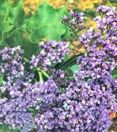
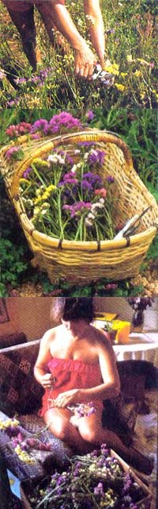

Are you beating your brains trying to figure out a good homestead cash crop for this spring?
For the past few years at our southern Oregon organic flower farm, we've grown hundreds of flower species and cultivars that we sell-both fresh and dried-to florists, supermarkets, businesses, offices, and individuals. Naturally, we continually seek to maximize the returns from our limited garden space, so we are always looking for any crop that is easy to grow and sell. One such discovery is statice, a plant whose several varieties are in the genus Limonium .
Having also been involved in a vegetable truck farm, we've had the opportunity to compare dollar yields per acre of the usual vegetables to those of our flower crops... and flowers, among them statice, rate much higher than vegetables in dollars earned. In addition, statice is easy to grow, is a cinch to sell, and offers little risk because it's easily dried. In other words, we think it's the ideal crop for the small-scale grower.
Statice seed can be purchased in single colors or as a mixture. The best colors, from the viewpoint of customer preference, are the roses, pinks, blues, apricots, and purples... with yellows and whites being the least desired. We plant half of our area in the individual colors and the other half in a mixture, giving us a usable proportion of yellows and whites.
You'll find that statice seed comes either "clean," called easy-grow, or still embedded in the dried flower heads, which we crush as finely as possible with our fingers. We've grown many strains from a lot of different seed producers without developing any particular preferences. However, because some colors are peculiar to particular strains, we grow small quantities of as many types as we can find, with the exception of dwarf varieties. These we avoid, since-as flower sellers-we need plants with long stems.
Seed catalogs may offer annual and perennial types of statice. Limonium suworowii , for example, is an annual that produces valuable blooms for dried arrangements, though it's more fickle to grow than Limonium sinuata . Limonium lacifolia and Statice tatarica are both hardy perennials that produce very airy, delicate blooms for fresh and dried arrangements, and as fillers, they are often considered superior to the popular gypsophila. Both of these varieties are relatively uncommon and in great demand, but they require a year before the first blooms are produced.
Limonium sinuata , on the other hand, blooms its first year and has a number of attributes that make it our favorite. First, it withstands frost quite well, thriving in our garden a month before the last spring frost and giving blooms a month after the first fall frost. Second, its very dense, broad-leaved, low foliage helps control weeds. In fact, it literally smothers them. Third, the long stems grow from the base of the plant and open their individual florets slowly, giving the grower a period of a week or more to cut each bloom in its prime. (Most cut flowers must be harvested every two days.) Fourth, statice has no insect enemies and no special requirements other than rich soil, full sun; and plenty of water. And, fifth, the plant produces blooms (here in southern Oregon) from July to November, giving the grower a steady supply from a single planting.
We start our seeds in an unheated greenhouse about eight weeks before the last frost date, sowing them very thickly in a tray filled with 1 inch of commercial potting soil and covering them with 1/8 inch of potting soil or vermiculite. Though the germination rate is always good, it varies somewhat with each variety and color. Therefore, just to be sure, we always sow many more seeds than we need. As soon as they're big enough to handle, the emerging seedlings are transplanted into standard nursery four-or six-packs filled with potting soil. (Compost can be used, but its high variability in nutrient proportions, pH, and panicle size and the presence of weed seeds can make it more trouble than it's worth.) New transplants are protected from the sun for two days and then returned to normal light conditions.
In a few weeks, the seedlings are about an inch in diameter and resemble a lawn weed. We place these in cold frames to harden for another two weeks before setting them out in the garden around April 1. In order to take maximum advantage of the fact that statice has a long period of production, it's essential that the plants be given an early start. However, since the statice is planted in the garden long before the earth warms, we start it out by fertilizing with a 50/50 mix of blood meal and meat meal, which promotes both immediate and longer-lasting release of nitrogen until the soil warms up in late spring.
To make the most efficient use of garden space, fertilizers, compost, and water, we grow statice in raised beds 5 feet across and 60 feet long. (Since we place the plants 15 inches apart, with a leeway of 7 inches to the edge of the path, each bed holds 188 plants.) In this way, 70% of the garden space is used for beds, and the other 30% is taken up by pathways, which are the width of the rotary cultivator plus 2 inches, allowing for easy maintenance. We've also found that using beds minimizes the tendency of the blooms to fall or bend, as their density allows them to support one another. Along the edges of the beds, we construct a simple string fence to keep the flowers from drooping into the walkways.
Watering can be done by overhead methods or by drip irrigation. Sprinkling the plants from above increases the chance that the blooms will fall, though this problem is not severe. Drip irrigation, then, is the perfect solution, but that, of course, requires extra capital.
The blooms can be harvested at any time of the day, though it's best to avoid the afternoon heat if possible. We cut the stems at ground level and immediately pack the flowers for sale in units of 10 to 20 stems, keeping the flower heads grouped together in an attractive bunch. We then cut the stems to a uniform length with a sharp knife or clippers... wrap them with a rubber band... and place the bundles in water out of direct sunlight. Unlike many cut flowers, statice is actually harmed by being put in refrigerated coolers. It does best in fresh water in a cool corner and is among the longest-lasting of all fresh flowers, remaining beautiful for two weeks or more. To dry the blooms, hang them upside down in a dark, airy place. (If placed upright, the flowers will wilt before they dry.)
From May to November, we grow and sell many varieties of flowers to many different customers... and they all appreciate statice. Florists are a source of information about competition and prices. Some may buy a substantial amount, but most use too little to make an extra stop on the delivery route worthwhile. Supermarkets and farmers' markets are our biggest customers.
When we approach a new store, we ask to see the manager or produce manager... show the prospective buyer a basket of statice... and guarantee that the store will have to pay only for what sells. These terms and a beautiful wicker basket make it easy to get our product in the store. Our display consists of the basket with a plastic bucket of water set within and a small sign: "Fresh statice, dry by hanging upside down, $2.00 a bunch." (If possible, we place the display by the checkout counter.) Allowing for the store's markup, that price gives us a gross profit of $1.30 to $1.40 on each cluster sold. We figure on clearing at least 10 cents a stem. A busy store or florist will buy 500 stems per week, or $200 worth per month, from July through December. And, lucky for us, the statice sells so well and lasts so long that we take back less than 1% of our deliveries . . . and we dry that to sell later.
Depending on the type of store and the location of the display basket, it may be worthwhile to wrap each bunch individually in green floral paper. This simple marketing technique can dramatically increase sales in locations where flowers are likely to be bought as gifts.
At the beginning of the season, we're happy to sell flowers to anyone who wishes to buy. For efficiency, however, we favor those customers who buy large quantities in a single delivery... who pay cash . . . and who will buy on a regular schedule. With a minimum of effort, we soon have more sales than statice and begin to drop the least profitable accounts and continue to serve the best ones throughout the year. There are, of course, our friends-and friends of friends-who purchase small amounts directly from us. And if we ever have too much cut on a particular day, we simply dry it.
Though we normally wholesale fresh statice for 10 cents per stem, sometimes we discount large cash orders. . . sometimes we sell to individuals at 12-1/2 cents per stem . . . and we sell all dried statice at the higher price.
As far as yields are concerned, so much depends on the fertility of the soil and on the weather that the amount we'll have available is very difficult to predict. We've harvested 20 stems from some plants and expect to average over 15 stems per plant. We plan to have one-quarter acre in statice, and we figure that area will hold 26 beds of 188 plants each. If the plants average 10 stems each, at 10 cents per stem, this plot will produce sales of $4,888. If the average is 15 stems, we'll reap $7,332. And should we be lucky enough to harvest as many as 20 stems per plant, we could expect a yield of around $9,776 worth of statice.
We've seen no vegetable crop that can match these returns for the space used . . . and no flowers are as easy to grow and sell as statice!
This article was originally published in MOTHER'S An Array of Gardens .
|
 Lovely statice can be an extremely profitable crop for the small-scale grower... Particularly since the flowers can be sold fresh or dried! |
 |
|